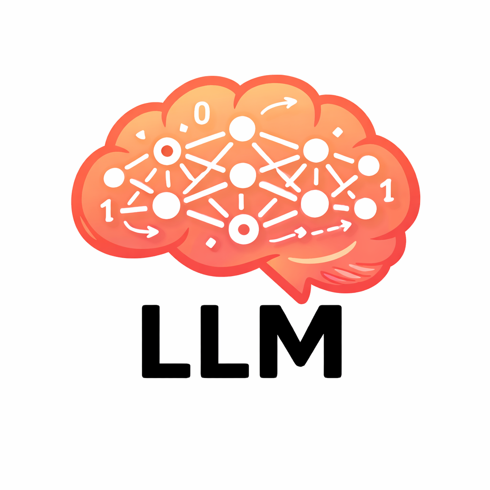
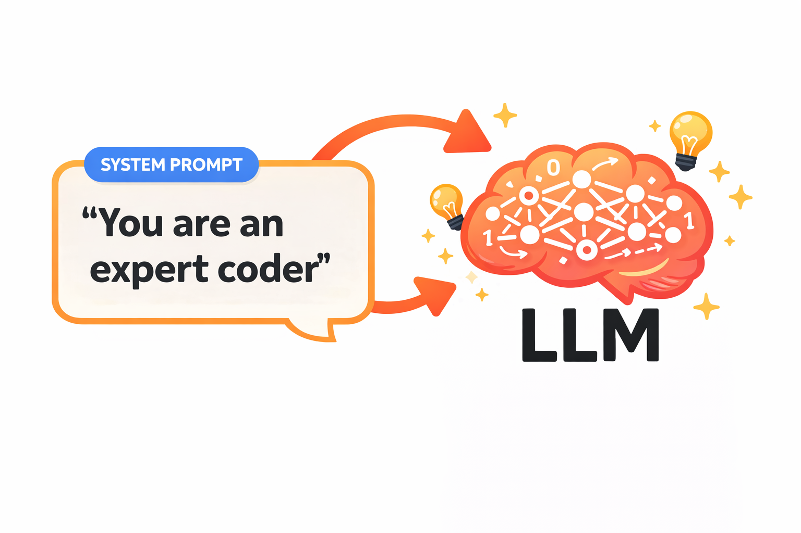
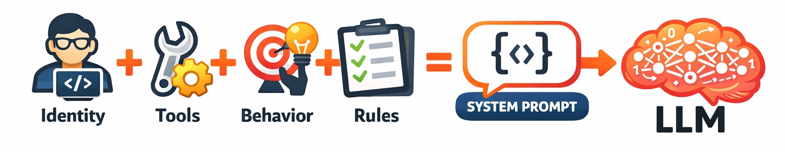

class: center, middle, inverse count: false # From Language Models to Agents --- class: center, middle # LLM and Agent Aren't the Same Thing <div style="display: flex; align-items: center; justify-content: center; gap: 1em;"> <p></p> <span style="font-size: 3em; font-weight: bold;">≠</span> </div> ??? Visual contrast to set up the lecture's central question. The rest of the lecture explains what bridges this gap. --- # LLM Is Connected to Action by Code A language model by itself is just a very sophisticated **text generator**. -- - It can write impressively about fixing code — but it can't actually **open a file** - It can describe a web search — but it can't actually **make one** - It can plan a series of actions — but it can't **execute any of them** -- So what changes that? ??? This is the central question of the lecture. --- class: center, middle, inverse # What LLMs Cannot Do Alone --- # What LLMs Can't Do An LLM, on its own: -- - **Can't access current information** — frozen at its training cutoff -- - **Can't interact with the world** — can't send emails, read files, query databases -- - **Can't do reliable math** — predicting tokens, not computing -- - **Can't verify its own claims** — no way to look something up and check -- - **Can't remember between conversations** — once the context is gone, it's gone ??? These limitations establish what we need to bridge. --- # But It Can Do One Very Important Thing .split-left[ An LLM *can*: **Reason** about what action should be taken **Express** that action in a structured format **Incorporate** the results into its ongoing reasoning .callout[If the LLM can say "I need to read this file" in a structured way, and your code can execute that read and return the contents, and the LLM can reason about those contents — **you have an agent.**] ] .split-right[ .info[LLMs are specifically trained to follow tool-calling instructions. Providers invest significant effort into fine-tuning models to produce correctly structured tool requests. It's not 100% — but in newer models, it is very reliable.] ] <div class="clear"></div> ??? This is the bridge. The LLM provides reasoning; your code provides capabilities. Together: an agent. The info box reinforces that tool calling isn't a hack — it's a first-class capability that model providers actively optimize for. --- class: center, middle, inverse # Tool Calling ## How Tool Calling Works --- # How Tool Calling Works Tool calling is a simple protocol: -- **1. You describe available tools** in the system prompt "read_file takes a filename and returns the contents of that file." -- **2. The model decides to use a tool** — instead of regular text, it returns structured JSON: ```json { "tool": "read_file", "arguments": { "filename": "main.py" } } ``` -- **3. Your code executes the tool** and returns the result: ```json { "result": "import sys\n\ndef main():\n print('hello')\n..." } ``` The LLM never executes anything. Your code receives the request, runs the operation, and feeds the result back. ??? Walk through this step by step. The protocol is the key mechanism. The JSON examples make it concrete — this is what students will actually see when they start building. --- # How Tool Calling Works (continued) **4. You feed the result back** You add the tool result to the conversation and call the API again. Now the model has the file contents in its context. -- **5. The model continues** It might respond to the user, or it might request another tool call. The loop continues until the model produces a final response. -- .info[The model never does anything more than predict the next token. But because it can request actions and receive results, that prediction becomes remarkably powerful.] ??? Emphasize: the model never executes anything. Your code does. This is the fundamental architecture. --- # This Is the Agent Loop Recognize this? It's the **perception-reasoning-action loop** from Lecture 1.1, just more concrete: .split-left[ <img src="llm-tool-loop.png" style="max-width:95%;"/> ] .split-right[ <div style="padding-top:1.5em;"></div> - **Perceive** = tool results entering the context window - **Reason** = the LLM predicting the next tokens, deciding what to do - **Act** = the LLM requesting a tool call, your code executing it ] <div class="clear"></div> -- The entire multi-step behavior of an agent — reading files, searching the web, editing code, running tests — emerges from this simple loop. ??? Close the loop back to 01-01. The abstract framework now has a concrete mechanism. --- class: center, middle, inverse # System Prompts ## Shaping the Agent --- # Who Is This Agent? .split-left[ Tool calling gives the model **capabilities**. But how does it know *when* to use which tool? How does it know how to behave? The **system prompt** — a message at the very beginning of the context that establishes the agent's identity, capabilities, and behavioral guidelines. .callout[Defining the role the agent emulates provides indirect direction. The LLM is a next-token predictor: tell it what to predict, and it will follow.] ] .split-right[ <p></p> ] <div class="clear"></div> ??? Transition from "how agents act" to "how you shape their behavior." The callout reinforces that role descriptions aren't just flavor text — they steer the model's behavior because they change the distribution of likely next tokens. --- # What Goes in a System Prompt .split-left[ - **Identity and role** - **Available tools and when to use them** - **Behavioral guidelines** - **Constraints** ] .split-right[ ```text You are a coding assistant that helps developers understand and modify their codebase. Use read_file to examine code before suggesting changes. Be concise. When you're unsure, say so rather than guessing. Never delete files without explicit user confirmation. ``` ] <div class="clear"></div> <div style="text-align:center"> <p></p> </div> ??? Each component maps to a design decision students will make when building agents. The example on the right shows all four categories in a single system prompt. --- # System Prompts as Training Override Remember from Lecture 2.1 — the model is verbose because instruction tuning rewarded thoroughness? **You can counteract that:** *"Be concise. Respond in 1-3 sentences unless more detail is explicitly requested."* -- Remember sycophancy from RLHF? **You can counteract that too:** *"If the user's approach has problems, say so directly. Do not agree with suggestions you believe are wrong."* -- .callout[The system prompt doesn't change the model's weights. It changes the **context** — and context is what the model reasons over. A well-crafted system prompt is a primary lever for shaping behavior.] ??? Connect every system prompt element back to the training pipeline from 2.2. System prompt design is strategic intervention into known behavioral patterns. --- class: center, middle, inverse # The Complete Picture --- # Putting It All Together .small[ **The LLM** — a next-token predictor trained on internet text, instruction examples, and human preferences. Remarkably capable within its training distribution, predictably flawed outside it. **The context window** — the finite space where the LLM does all its reasoning. System prompt, history, tool results — everything comes through here. **Tool calling** — the protocol that bridges text prediction to real-world interaction. The model requests; your code executes. **The system prompt** — a primary lever for shaping behavior, compensating for training biases, and establishing constraints. **The agent loop** — your code orchestrates: send context → parse tool calls → execute → return results → repeat. ] ??? This is the synthesis. All five concepts from 02-01 through 02-03 in one place. --- # Module 2 Complete With this foundation, you understand: - What your agent's brain is actually doing when it "thinks" - Why it behaves the way it does .dim[(training data and RLHF)] - How it takes action in the world .dim[(tool calling, executed by your code)] - How you shape its behavior .dim[(system prompts and context)] .info[Next: context windows, tokenization, and the practical mechanics of LLM APIs. Then prompt and context engineering — and then we build.] ??? The theoretical foundation is complete. Everything from here is practical application.